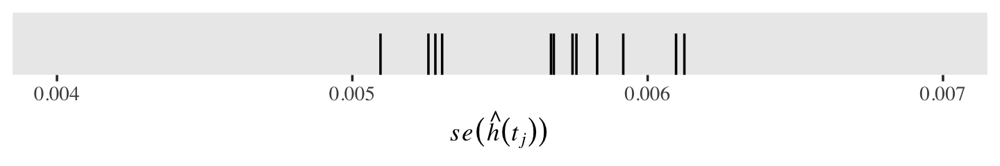

10 Describing Discrete-Time Event Occurrence Data
In this chapter, [Singer and Willett presented] a framework for describing discrete-time event occurrence data…. As we will [see], the conceptual linchpin for all subsequent survival methods is to approach the analysis on a period-by-period basis. This allows you to examine event occurrence sequentially among those individuals eligible to experience the event at each discrete point in time. (Singer & Willett, 2003, p. 325)
10.1 The life table
The fundamental tool for summarizing the sample distribution of event occurrence is the life table. As befits its name, a life table tracks the event histories (the “lives”) of a sample of individuals from the beginning of time (when no one has yet experienced the target event) through the end of data collection. (p. 326, emphasis in the original)
To make a life table as presented in Table 10.1, we need to load the teachers.csv data.
library(tidyverse)
teachers <- read_csv("data/teachers.csv")
glimpse(teachers)## Rows: 3,941
## Columns: 3
## $ id <dbl> 1, 2, 3, 4, 5, 6, 7, 8, 9, 10, 12, 13, 14, 15, 16, 17, 18, 19, 20, 21, 22, 23, 24, …
## $ t <dbl> 1, 2, 1, 1, 12, 1, 12, 1, 2, 2, 7, 12, 1, 12, 12, 2, 12, 1, 3, 2, 12, 12, 9, 12, 2,…
## $ censor <dbl> 0, 0, 0, 0, 1, 0, 1, 0, 0, 0, 0, 1, 0, 1, 1, 0, 1, 0, 0, 0, 1, 1, 0, 1, 0, 0, 0, 0,…Perhaps the easiest way to make a life table as presented in Table 10.1 is with help from the survival package (Terry M. Therneau, 2021c; Terry M. Therneau & Grambsch, 2000).
# install.packages("survival", dependencies = T)
library(survival)Here we’ll use the survfit() function to compute survival curves. Within the survfit() function, we’ll use the Surv() function to make a survival object, which will become the criterion within the model formula. It takes two basic arguments, time and event. With the teachers data, t is time in years. In the data, events are encoded in censor. However, it’s important to understand how the event argument expects the data. From the survival reference manual (Terry M. Therneau, 2021b), we read that event is “the status indicator, normally 0=alive, 1=dead. Other choices are TRUE/FALSE (TRUE = death) or 1/2 (2=death).” Note that whereas within our data censor is coded 0 = event 1 = censored, the event argument expects the opposite. A quick way to solve that is to enter 1 - censor.
fit10.1 <- survfit(data = teachers,
Surv(t, 1 - censor) ~ 1)Use the str() function to survey the results.
fit10.1 %>% str()## List of 16
## $ n : int 3941
## $ time : num [1:12] 1 2 3 4 5 6 7 8 9 10 ...
## $ n.risk : num [1:12] 3941 3485 3101 2742 2447 ...
## $ n.event : num [1:12] 456 384 359 295 218 184 123 79 53 35 ...
## $ n.censor : num [1:12] 0 0 0 0 0 0 280 307 255 265 ...
## $ surv : num [1:12] 0.884 0.787 0.696 0.621 0.566 ...
## $ std.err : num [1:12] 0.00576 0.00829 0.01053 0.01245 0.01396 ...
## $ cumhaz : num [1:12] 0.116 0.226 0.342 0.449 0.538 ...
## $ std.chaz : num [1:12] 0.00542 0.00781 0.00992 0.01173 0.01319 ...
## $ type : chr "right"
## $ logse : logi TRUE
## $ conf.int : num 0.95
## $ conf.type: chr "log"
## $ lower : num [1:12] 0.874 0.774 0.682 0.606 0.55 ...
## $ upper : num [1:12] 0.894 0.8 0.71 0.636 0.581 ...
## $ call : language survfit(formula = Surv(t, 1 - censor) ~ 1, data = teachers)
## - attr(*, "class")= chr "survfit"We can retrieve the values for the “Year” column from fit10.1$time. The values in the “Time interval” column are a simple transformation from there.
fit10.1$time## [1] 1 2 3 4 5 6 7 8 9 10 11 12We can find the values in the “Employed at the beginning of the year” column in fit10.1$n.risk and those in the “Who left during the year” column in fit10.1$n.event.
fit10.1$n.risk## [1] 3941 3485 3101 2742 2447 2229 2045 1642 1256 948 648 391fit10.1$n.event## [1] 456 384 359 295 218 184 123 79 53 35 16 5We’ll have to work a little harder to compute the values in the “Censored at the end of the year column.” Here we’ll walk it through in a data frame format.
data.frame(n_risk = fit10.1$n.risk,
n_event = fit10.1$n.event) %>%
mutate(n_risk_1 = lead(n_risk, default = 0)) %>%
mutate(n_censored = n_risk - n_event - n_risk_1)## n_risk n_event n_risk_1 n_censored
## 1 3941 456 3485 0
## 2 3485 384 3101 0
## 3 3101 359 2742 0
## 4 2742 295 2447 0
## 5 2447 218 2229 0
## 6 2229 184 2045 0
## 7 2045 123 1642 280
## 8 1642 79 1256 307
## 9 1256 53 948 255
## 10 948 35 648 265
## 11 648 16 391 241
## 12 391 5 0 386That is, to get the number of those censored at the end of a given year, you take the number employed at the beginning of that year, subtract the number of those who left (i.e., the number who experienced the “event”), and then subtract the number of those employed at the beginning of the next year. Notice our use of the dplyr::lead() function to get the number employed in the next year (learn more about that function here).
To get the values in the “Teachers at the beginning of the year who left during the year” column, which is in a proportion metric, we use division.
fit10.1$n.event / fit10.1$n.risk## [1] 0.11570667 0.11018651 0.11576911 0.10758570 0.08908868 0.08254823 0.06014670 0.04811206
## [9] 0.04219745 0.03691983 0.02469136 0.01278772Finally, to pull the values in the “All teachers still employed at the end of the year” column, we just execute fit10.1$surv.
fit10.1$surv## [1] 0.8842933 0.7868561 0.6957625 0.6209084 0.5655925 0.5189038 0.4876935 0.4642295 0.4446402
## [10] 0.4282242 0.4176508 0.4123100Let’s put that all together in a tibble.
most_rows <-
tibble(year = fit10.1$time) %>%
mutate(time_int = str_c("[", year, ", ", year + 1, ")"),
n_employed = fit10.1$n.risk,
n_left = fit10.1$n.event) %>%
mutate(n_censored = n_employed - n_left - lead(n_employed, default = 0),
hazard_fun = n_left / n_employed,
survivor_fun = fit10.1$surv)
most_rows## # A tibble: 12 × 7
## year time_int n_employed n_left n_censored hazard_fun survivor_fun
## <dbl> <chr> <dbl> <dbl> <dbl> <dbl> <dbl>
## 1 1 [1, 2) 3941 456 0 0.116 0.884
## 2 2 [2, 3) 3485 384 0 0.110 0.787
## 3 3 [3, 4) 3101 359 0 0.116 0.696
## 4 4 [4, 5) 2742 295 0 0.108 0.621
## 5 5 [5, 6) 2447 218 0 0.0891 0.566
## 6 6 [6, 7) 2229 184 0 0.0825 0.519
## 7 7 [7, 8) 2045 123 280 0.0601 0.488
## 8 8 [8, 9) 1642 79 307 0.0481 0.464
## 9 9 [9, 10) 1256 53 255 0.0422 0.445
## 10 10 [10, 11) 948 35 265 0.0369 0.428
## 11 11 [11, 12) 648 16 241 0.0247 0.418
## 12 12 [12, 13) 391 5 386 0.0128 0.412The only thing missing from our version of Table 10.1 is we don’t have a row for Year 0. Here’s a quick and dirty way to manually insert those values.
row_1 <-
tibble(year = 0,
time_int = "[0, 1)",
n_employed = fit10.1$n.risk[1],
n_left = NA,
n_censored = NA,
hazard_fun = NA,
survivor_fun = 1)
d <-
bind_rows(row_1,
most_rows)
d## # A tibble: 13 × 7
## year time_int n_employed n_left n_censored hazard_fun survivor_fun
## <dbl> <chr> <dbl> <dbl> <dbl> <dbl> <dbl>
## 1 0 [0, 1) 3941 NA NA NA 1
## 2 1 [1, 2) 3941 456 0 0.116 0.884
## 3 2 [2, 3) 3485 384 0 0.110 0.787
## 4 3 [3, 4) 3101 359 0 0.116 0.696
## 5 4 [4, 5) 2742 295 0 0.108 0.621
## 6 5 [5, 6) 2447 218 0 0.0891 0.566
## 7 6 [6, 7) 2229 184 0 0.0825 0.519
## 8 7 [7, 8) 2045 123 280 0.0601 0.488
## 9 8 [8, 9) 1642 79 307 0.0481 0.464
## 10 9 [9, 10) 1256 53 255 0.0422 0.445
## 11 10 [10, 11) 948 35 265 0.0369 0.428
## 12 11 [11, 12) 648 16 241 0.0247 0.418
## 13 12 [12, 13) 391 5 386 0.0128 0.412We might walk out the notation in our time_int column a bit. Those intervals
reflect a standard partition of time, in which each interval includes the initial time and excludes the concluding time. Adopting common mathematical notation, [brackets] denote inclusions and (parentheses) denote exclusions. Thus, we bracket each interval’s initial time and place a parenthesis around its concluding time. (p. 328, emphasis in the original)
The values in the n_employed column the risk set, those who are “eligible to experience the event during that interval” (p. 329, emphasis in the original).
10.2 A framework for characterizing the distribution of discrete-time event occurrence data
The fundamental quantity used to assess the risk of event occurrence in each discrete time period is known as hazard. Denoted by \(h(t_{ij})\), discrete time hazard is the conditional probability that individual \(i\) will experience the event time in period \(j\), given that he or she did not experience it in any earlier time period. Because hazard represents the risk of the event occurrence in each discrete time period among those people eligible to experience the event (those in the risk set) hazard tells us precisely what we want to know: whether and when events occurs. (p. 330, emphasis in the original)
If we let \(T_i\) stand for the discrete value in time person \(i\) experiences the event, we can express the conditional probability the event might occur in the \(j^\text{th}\) interval as
\[h(t_{ij}) = \Pr[T_i = j \mid T \geq j].\]
That last part, \(T \geq j\), clarifies the event can only occur once and, therefore, cannot have occurred in any of the prior levels of \(j\). More plainly put, imagine the event is death and person \(i\) died during the period of \(T_j = 20\). In such a case, it’s nonsensical to speak of that \(i^\text{th}\) person’s hazard for the period of \(T_j = 25\). They’re already dead.
Also, “the discrete-time hazard probabilities expressed as a function of time–labeled \(h(t_{ij})\)–is known as the population discrete-time hazard function” (p 330, emphasis in the original). That was expressed in the 6th column in Table 10.1, which we called hazard_fun in our d tibble.
d %>%
select(year, hazard_fun)## # A tibble: 13 × 2
## year hazard_fun
## <dbl> <dbl>
## 1 0 NA
## 2 1 0.116
## 3 2 0.110
## 4 3 0.116
## 5 4 0.108
## 6 5 0.0891
## 7 6 0.0825
## 8 7 0.0601
## 9 8 0.0481
## 10 9 0.0422
## 11 10 0.0369
## 12 11 0.0247
## 13 12 0.0128You might notice \(h(t_{ij})\) is in a proportion metric and it is not cumulative. If you look above in the code, you’ll see we computed that by hazard_fun = n_left / n_employed. More formally and generally, this is an operationalization of
\[\hat h(t_{j}) = \frac{n \text{ events}_j}{n \text{ at risk}_j},\]
where \(n \text{ events}_j\) is the number of individuals who experienced the event in the \(j^{th}\) period and \(n \text{ at risk}_j\) is the number within the period who have not (a) already experienced the event and (b) been censored. Also note that by \(\hat h(t_{j})\), we’re indicating we’re talking about the maximum likelihood estimate for \(h(t_{j})\). Because no one is at risk during the initial time point, \(h(t_0)\) is undefined (i.e., NA). Here we mimic the top panel of Figure 10.1 and plot our \(\hat h(t_{j})\) over time.
d %>%
ggplot(aes(x = year, y = hazard_fun)) +
geom_line() +
scale_x_continuous("years in teaching", breaks = 0:13, limits = c(0, 13)) +
scale_y_continuous(expression("estimated hazard probability, "*hat(italic(h))(italic(t[j]))),
breaks = c(0, .05, .1, .15), limits = c(0, .15)) +
theme(panel.grid = element_blank())10.2.1 Survivor function.
The survivor function provides another way of describing the distribution of event occurrence over time. Unlike the hazard function, which assesses the unique risk associated with each time period, the survivor function cumulates these period-by-period risks of event occurrence (or more properly, nonoccurrence) together to assess the probability that a randomly selected individual will survive will not experience the event.
We can formally define the survivor function, \(S(t_{ij})\), as
\[S(t_{ij}) = \Pr[T > j],\]
where \(S\) is survival as a function of time, \(t\). But since our data are finite, we can only have an estimate of the “true” survivor function, which we call \(\hat S(t_{ij})\). Here it is in a plot, our version of the bottom panel of Figure 10.1.
d %>%
ggplot(aes(x = year, y = survivor_fun)) +
geom_hline(yintercept = .5, color = "white", linetype = 2) +
geom_line() +
scale_x_continuous("years in teaching", breaks = 0:13, limits = c(0, 13)) +
scale_y_continuous(expression("estimated survival probability, "*hat(italic(S))(italic(t[j]))),
breaks = c(0, .5, 1), limits = c(0, 1)) +
theme(panel.grid = element_blank())10.2.2 Median lifetime.
Having characterized the distribution of event times using the hazard and survivor functions, we often want to identify the distribution’s center. Were there no censoring, all event times would be known, and we could compute a sample mean. But because of censoring, another estimate of central tendency is preferred: the median lifetime.
The estimated median lifetime identifies that value for \(T\) for which the value of the estimated survivor function is .5. It is the point in time by which we estimate that half of the sample has experienced the target event, half has not. (p. 337, emphasis in the original)
If we use filter(), well see our median lifetime rests between years 6 and 7.
d %>%
filter(year %in% c(6, 7)) %>%
# this just simplifies the output
select(year, time_int, survivor_fun)## # A tibble: 2 × 3
## year time_int survivor_fun
## <dbl> <chr> <dbl>
## 1 6 [6, 7) 0.519
## 2 7 [7, 8) 0.488Using a simple descriptive approach, we’d just say the median lifetime was between years 6 and 7. We could also follow Miller (1981) and linearly interpolate between the two values of \(S(t_j)\) bracketing .5. If we let \(m\) be the time interval just before the median lifetime, \(\hat S(t_m)\) be the value of the survivor function in that \(m^\text{th}\) interval, and \(\hat S(t_{m + 1})\) be the survival value in the next interval, the can write
\[\text{Estimated median lifetime} = m + \Bigg [\frac{\hat S(t_m) - .5}{\hat S(t_m) - \hat S(t_{m + 1})} \Bigg ] \big ((m + 1) - m \big).\]
We can compute that by hand like so.
m <- 6
m_plus_1 <- 7
stm <-
d %>%
filter(year == m) %>%
pull(survivor_fun)
stm_plus_1 <-
d %>%
filter(year == m_plus_1) %>%
pull(survivor_fun)
# compute the interpolated median lifetime and save it as `iml`
iml <- m + ((stm - .5) / (stm - stm_plus_1)) * ((m + 1) - m)
iml## [1] 6.605691Now we have the iml value, we can add that information to our version of the lower panel of Figure 10.1.
line <-
tibble(year = c(0, iml, iml),
survivor_fun = c(.5, .5, 0))
d %>%
ggplot(aes(x = year, y = survivor_fun)) +
geom_path(data = line,
color = "white", linetype = 2) +
geom_line() +
annotate(geom = "text",
x = iml, y = .55,
label = "All teachers (6.6 years)",
hjust = 0) +
scale_x_continuous("years in teaching", breaks = 0:13, limits = c(0, 13)) +
scale_y_continuous(expression("estimated survival probability, "*hat(italic(S))(italic(t[j]))),
breaks = c(0, .5, 1), limits = c(0, 1)) +
theme(panel.grid = element_blank())We can compute the estimates for the 5- and 10-year survival rates as a direct algebraic transformation of the survival function from those years.
d %>%
filter(year %in% c(5, 10)) %>%
select(year, survivor_fun) %>%
mutate(`survival rate (%)` = (100 * survivor_fun) %>% round(digits = 0))## # A tibble: 2 × 3
## year survivor_fun `survival rate (%)`
## <dbl> <dbl> <dbl>
## 1 5 0.566 57
## 2 10 0.428 4310.3 Developing intuition about hazard functions, survivor functions, and median lifetimes
Developing intuition about these sample statistics requires exposure to estimates computed from a wide range of studies. To jump-start this process, we review results from four studies that differ across three salient dimensions–the type of event investigated, the metric used to record discrete time, and most important, the underlying profile of risk–and discuss how we would examine, and describe, the estimated hazard functions, survivor functions, and median lifetimes. (p. 339)
Here we load the four relevant data sets.
cocaine <- read_csv("data/cocaine_relapse.csv")
sex <- read_csv("data/firstsex.csv")
suicide <- read_csv("data/suicide.csv")
congress <- read_csv("data/congress.csv")
# glimpse(cocaine)
# glimpse(sex)
# glimpse(suicide)
# glimpse(congress)We have a lot of leg work in front of use before we can recreate Figure 10.2. First, we’ll feed each of the four data sets into the survfit() function.
fit10.2 <-
survfit(data = cocaine,
Surv(week, 1 - censor) ~ 1)
fit10.3 <-
survfit(data = sex,
Surv(time, 1 - censor) ~ 1)
fit10.4 <-
survfit(data = suicide,
Surv(time, 1 - censor) ~ 1)
fit10.5 <-
survfit(data = congress,
Surv(time, 1 - censor) ~ 1)Given the four fits all follow the same basic form and given our end point is to make the same basic plots for each, we can substantially streamline our code by making a series of custom functions. For our first custom function, make_lt(), we’ll save the general steps for making life tables for each data set.
make_lt <- function(fit) {
# arrange the lt data for all rows but the first
most_rows <-
tibble(time = fit$time) %>%
mutate(time_int = str_c("[", time, ", ", time + 1, ")"),
n_risk = fit$n.risk,
n_event = fit$n.event) %>%
mutate(hazard_fun = n_event / n_risk,
survivor_fun = fit$surv)
# define the values for t = 2 and t = 1
time_1 <- fit$time[1]
time_0 <- time_1 - 1
# define the values for the row for which t = 1
row_1 <-
tibble(time = time_0,
time_int = str_c("[", time_0, ", ", time_1, ")"),
n_risk = fit$n.risk[1],
n_event = NA,
hazard_fun = NA,
survivor_fun = 1)
# make the full life table
lt <-
bind_rows(row_1,
most_rows)
lt
}Use make_lt() to make the four life tables.
lt_cocaine <- make_lt(fit10.2)
lt_sex <- make_lt(fit10.3)
lt_suicide <- make_lt(fit10.4)
lt_congress <- make_lt(fit10.5)You’ll note that the four survival-curve plots in Figure 10.2 all show the median lifetime using the interpolation method. Here we’ll save the necessary steps to compute that for each model as the make_iml() function.
make_iml <- function(lt) {
# lt is a generic name for a life table of the
# kind we made with our `make_lt()` function
# determine the mth row
lt_m <-
lt %>%
filter(survivor_fun > .5) %>%
slice(n())
# determine the row for m + 1
lt_m1 <-
lt %>%
filter(survivor_fun < .5) %>%
slice(1)
# pull the value for m
m <- pull(lt_m, time)
# pull the two survival function values
stm <- pull(lt_m, survivor_fun)
stm1 <- pull(lt_m1, survivor_fun)
# plug the values into Equation 10.6 (page 338)
iml <- m + ((stm - .5) / (stm - stm1)) * ((m + 1) - m)
iml
}If you want, you can use make_iml() directly like this.
make_iml(lt_cocaine)## [1] 7.5However, our approach will be to wrap it in another function, line_tbl(), with which we will save the coordinates necessary for marking off the median lifetimes and them save them in a tibble.
line_tbl <- function(lt) {
iml <- make_iml(lt)
tibble(time = c(lt[1, 1] %>% pull(), iml, iml),
survivor_fun = c(.5, .5, 0))
}It works like this.
line_tbl(lt_cocaine)## # A tibble: 3 × 2
## time survivor_fun
## <dbl> <dbl>
## 1 0 0.5
## 2 7.5 0.5
## 3 7.5 0If you look closely at the hazard function plots in the left column of Figure 10.2, you’ll note they share many common settings (e.g., the basic shape, the label of the \(y\)-axis). But there are several parameters we’ll need to set custom settings for. To my eye, those are:
- the data;
- the \(x\)-axis label, break points, and limits; and
- the \(y\)-axis break points, and limits.
With our custom h_plot() function, we’ll leave those parameters free while keeping all the other ggplot2 parameters the same.
h_plot <- function(data = data,
xlab = xlab, xbreaks = xbreaks, xlimits = xlimits,
ybreaks = ybreaks, ylimits = ylimits) {
ggplot(data = data,
mapping = aes(x = time, y = hazard_fun)) +
geom_line() +
scale_x_continuous(xlab, breaks = xbreaks, limits = xlimits) +
scale_y_continuous(expression(widehat(italic(h(t)))),
breaks = ybreaks, limits = ylimits) +
theme(panel.grid = element_blank())
}Now we’ll make a similar custom plotting function, s_plot(), for the hazard function plots on the right column of Figure 10.2.
s_plot <- function(data = data, xlab = xlab, xbreaks = xbreaks, xlimits = xlimits) {
# compute the interpolated median life value
iml <- make_iml(data)
# make the imp line values
line <-
data %>%
line_tbl()
ggplot(data = data,
mapping = aes(x = time, y = survivor_fun)) +
geom_path(data = line,
color = "white", linetype = 2) +
geom_line() +
annotate(geom = "text",
x = iml, y = .6,
label = str_c("widehat(ML)==", iml %>% round(1)),
size = 3, hjust = 0, parse = T) +
scale_x_continuous(xlab, breaks = xbreaks, limits = xlimits) +
scale_y_continuous(expression(widehat(italic(S(t)))),
breaks = c(0, .5, 1), limits = c(0, 1)) +
theme(panel.grid = element_blank())
}Now we make the eight subplots in bulk, naming them p1, p2, and so on.
# cocaine
p1 <-
lt_cocaine %>%
h_plot(xlab = "Weeks after release",
xbreaks = 0:12, xlimits = c(0, 12),
ybreaks = c(0, .05, .1, .15), ylimits = c(0, .15))
p2 <-
lt_cocaine %>%
s_plot(xlab = "Weeks after release",
xbreaks = 0:12, xlimits = c(0, 12))
# sex
p3 <-
lt_sex %>%
h_plot(xlab = "Grade",
xbreaks = 6:12, xlimits = c(6, 12),
ybreaks = 0:3 / 10, ylimits = c(0, .325))
p4 <-
lt_sex %>%
s_plot(xlab = "Grade",
xbreaks = 6:12, xlimits = c(6, 12))
# suicide
p5 <-
lt_suicide %>%
h_plot(xlab = "Age",
xbreaks = 1:9 * 2 + 3, xlimits = c(5, 22),
ybreaks = c(0, .05, .1, .15), ylimits = c(0, .16))
p6 <-
lt_suicide %>%
s_plot(xlab = "Age",
xbreaks = 1:9 * 2 + 3, xlimits = c(5, 22))
# congress
p7 <-
lt_congress %>%
h_plot(xlab = "Terms in office",
xbreaks = 0:8, xlimits = c(0, 8),
ybreaks = 0:3 / 10, ylimits = c(0, .3))
p8 <-
lt_congress %>%
s_plot(xlab = "Terms in office",
xbreaks = 0:8, xlimits = c(0, 8))Now we’ll use some functions and syntax from the patchwork package to combine the subplots and make Figure 10.2.
library(patchwork)
p12 <- (p1 + p2) + plot_annotation(title = "A") & theme(plot.margin = margin(0, 5.5, 0, 5.5))
p34 <- (p3 + p4) + plot_annotation(title = "B") & theme(plot.margin = margin(0, 5.5, 0, 5.5))
p56 <- (p5 + p6) + plot_annotation(title = "C") & theme(plot.margin = margin(0, 5.5, 0, 5.5))
p78 <- (p7 + p8) + plot_annotation(title = "D") & theme(plot.margin = margin(0, 5.5, 0, 5.5))
(wrap_elements(p12) /
wrap_elements(p34) /
wrap_elements(p56) /
wrap_elements(p78))Boom! Looks like a dream.
10.3.1 Identifying periods of high and low risk using hazard functions.
It can be useful to evaluate hazard functions based on whether they are monotonic (i.e., have a single distinctive peak and single distinctive trough) and nonmonotonic (i.e., have multiple distinctive peaks or troughs). Globally speaking, the hazard functions for rows A and B are monotonic and the remaining two are nonmonotonic.
Singer and Willett remarked “monotonically increasing hazard functions are common when studying events that are ultimately inevitable (or near universal)…. [However,] nonmonotonic hazard functions, like those in Panels C and D, generally arise in studies of long duration” (p. 342).
However, when risk is constant over time, hazard functions will not have peaks or troughs.
10.3.2 Survivor functions as a context for evaluating the magnitude of hazard.
Unlike with hazard functions, all survivor functions decrease or stay constant over time. They are monotonic (i.e., they never switch direction, they never increase). From the text (p. 344), we learn three ways hazard functions relate to survival functions:
- When hazard is high, the survivor function drops rapidly.
- When hazard is low, the survivor function drops slowly.
- When hazard is zero, the survivor function remains unchanged.
10.3.3 Strengths and limitations of estimated median lifetimes.
When examining a median lifetime, we find it helpful to remember three important limitations on its interpretation. First, it identifies only an “average” event time; it tells us little about the distribution of even times and is relatively insensitive to extreme values. Second, the median lifetime is not necessarily a moment when the target event is especially likely to occur…. Third, the median lifetime reveals little about the distribution of risk over time; identical median lifetimes can result from dramatically different survivor and hazard functions. (pp. 345–346, emphasis in the original)
Without access to Singer and Willett’s hypothetical data, we’re not in a good position to recreate their Figure 10.3. Even the good folks at IDRE gave up on that one.
10.4 Quantifying the effects of sampling variation
We can quantify the uncertainty in the estimates with standard errors.
10.4.1 The standard error of the estimated hazard probabilities.
The formula for the frequentist standard errors for the hazard probabilities follows the form
\[se \left (\hat h(t_j) \right) = \sqrt{\frac{\hat h(t_j) \left (1 - \hat h(t_j) \right)}{n \text{ at risk}_j}}.\]
We can express that equation R code to recreate the first four columns of Table 10.2. We’ll be pulling much of the information from fit10.1. But to show our work within a tibble format, we’ll be adding a column after \(n_j\). Our additional n_event column will contain the information pulled from fit10.1$n.event, which we’ll use to compute the \(\hat h(t_j)\).
se_h_hat <-
tibble(year = fit10.1$time,
n_j = fit10.1$n.risk,
n_event = fit10.1$n.event) %>%
mutate(h_hat = n_event / n_j) %>%
mutate(se_h_hat = sqrt((h_hat * (1 - h_hat)) / n_j))
se_h_hat## # A tibble: 12 × 5
## year n_j n_event h_hat se_h_hat
## <dbl> <dbl> <dbl> <dbl> <dbl>
## 1 1 3941 456 0.116 0.00510
## 2 2 3485 384 0.110 0.00530
## 3 3 3101 359 0.116 0.00575
## 4 4 2742 295 0.108 0.00592
## 5 5 2447 218 0.0891 0.00576
## 6 6 2229 184 0.0825 0.00583
## 7 7 2045 123 0.0601 0.00526
## 8 8 1642 79 0.0481 0.00528
## 9 9 1256 53 0.0422 0.00567
## 10 10 948 35 0.0369 0.00612
## 11 11 648 16 0.0247 0.00610
## 12 12 391 5 0.0128 0.00568As in the text, our standard errors are pretty small. To get a better sense, here they are in a rug plot.
se_h_hat %>%
ggplot(aes(x = se_h_hat)) +
geom_rug(length = unit(0.25, "in")) +
scale_x_continuous(expression(italic(se)(hat(italic(h))(italic(t[j])))), limits = c(.004, .007)) +
theme(text = element_text(family = "Times"),
panel.grid = element_blank())
Standard errors for discrete hazards probabilities share a property with those for other probabilities: they are less certain (i.e., larger) for probability values near .5 and increasingly certain (i.e., smaller) for probability values approaching 0 and 1. To give a sense of that, here are the corresponding \(se \big (\hat h(t_j) \big)\) for a series of \(\hat h(t_j)\) values ranging from 0 to 1, with \(n_j\) held constant at 1,000.
tibble(n_j = 1000,
h_hat = seq(from = 0, to = 1, by = .01)) %>%
mutate(se_h_hat = sqrt((h_hat * (1 - h_hat)) / n_j)) %>%
ggplot(aes(x = h_hat, y = se_h_hat)) +
geom_point() +
labs(x = expression(hat(italic(h))(italic(t[j]))),
y = expression(italic(se)(hat(italic(h))(italic(t[j]))))) +
theme(text = element_text(family = "Times"),
panel.grid = element_blank())Also, as the size of the risk set, \(n_j\), influences the standard errors in the typical way. All things equal, a larger \(n\) will make for a smaller \(se\). To give a sense, here’s the same basic plot from above, but this time with \(n_j = 100, 1{,}000, \text{ and } 10{,}000\).
crossing(n_j = c(100, 1000, 10000),
h_hat = seq(from = 0, to = 1, by = .01)) %>%
mutate(se_h_hat = sqrt((h_hat * (1 - h_hat)) / n_j),
n_j = str_c("italic(n[j])==", n_j)) %>%
ggplot(aes(x = h_hat, y = se_h_hat)) +
geom_point() +
labs(x = expression(hat(italic(h))(italic(t[j]))),
y = expression(italic(se)(hat(italic(h))(italic(t[j]))))) +
theme(text = element_text(family = "Times"),
panel.grid = element_blank()) +
facet_wrap(~ n_j, nrow = 1, labeller = label_parsed)10.4.2 Standard error of the estimated survival probabilities.
Computing the frequentist standard errors for estimated survival probabilities is more difficult because these are the products of (1 - hazard) for the current and all previous survival probabilities. Computing them is such a pain, Singer and Willett recommend you rely on Greenwood’s (1926) approximation. This follows the form
\[se \big (\hat S(t_j) \big) = \hat S(t_j) \sqrt{\frac{\hat h(t_1)}{n_1 \big (1 - \hat h(t_1) \big)} + \frac{\hat h(t_2)}{n_2 \big (1 - \hat h(t_2) \big)} + \cdots + \frac{\hat h(t_j)}{n_j \big (1 - \hat h(t_j) \big)}}.\]
Here we put the formula to work and finish our version of Table 10.2. For the sake of sanity, we’re simply calling our “Term under the square root sign” column term. Note our use of the cumsum() function.
# suspend scientific notation
options(scipen = 999)
tibble(year = fit10.1$time,
n_j = fit10.1$n.risk,
n_event = fit10.1$n.event) %>%
mutate(h_hat = n_event / n_j) %>%
mutate(se_h_hat = sqrt((h_hat * (1 - h_hat)) / n_j),
s_hat = fit10.1$surv,
term = cumsum(h_hat / (n_j * (1 - h_hat)))) %>%
mutate(se_s_hat = s_hat * sqrt(term),
std.err = fit10.1$std.err)## # A tibble: 12 × 9
## year n_j n_event h_hat se_h_hat s_hat term se_s_hat std.err
## <dbl> <dbl> <dbl> <dbl> <dbl> <dbl> <dbl> <dbl> <dbl>
## 1 1 3941 456 0.116 0.00510 0.884 0.0000332 0.00510 0.00576
## 2 2 3485 384 0.110 0.00530 0.787 0.0000687 0.00652 0.00829
## 3 3 3101 359 0.116 0.00575 0.696 0.000111 0.00733 0.0105
## 4 4 2742 295 0.108 0.00592 0.621 0.000155 0.00773 0.0124
## 5 5 2447 218 0.0891 0.00576 0.566 0.000195 0.00790 0.0140
## 6 6 2229 184 0.0825 0.00583 0.519 0.000235 0.00796 0.0153
## 7 7 2045 123 0.0601 0.00526 0.488 0.000267 0.00796 0.0163
## 8 8 1642 79 0.0481 0.00528 0.464 0.000297 0.00800 0.0172
## 9 9 1256 53 0.0422 0.00567 0.445 0.000332 0.00811 0.0182
## 10 10 948 35 0.0369 0.00612 0.428 0.000373 0.00827 0.0193
## 11 11 648 16 0.0247 0.00610 0.418 0.000412 0.00848 0.0203
## 12 12 391 5 0.0128 0.00568 0.412 0.000445 0.00870 0.0211For comparisson, we also added the \(se \big (\hat S(t_j) \big)\) values coputed by the survivor package in the final column, std.err.
tibble(year = fit10.1$time,
n_j = fit10.1$n.risk,
n_event = fit10.1$n.event) %>%
mutate(h_hat = n_event / n_j) %>%
mutate(se_h_hat = sqrt((h_hat * (1 - h_hat)) / n_j),
s_hat = fit10.1$surv,
term = cumsum(h_hat / (n_j * (1 - h_hat)))) %>%
mutate(Greenwood = s_hat * sqrt(term),
`survival package` = fit10.1$std.err) %>%
pivot_longer(Greenwood:`survival package`) %>%
mutate(name = factor(name,
levels = c("survival package", "Greenwood"))) %>%
ggplot(aes(x = year, y = value, color = name)) +
geom_point(size = 4) +
scale_color_viridis_d(NULL, option = "A", end = .55) +
scale_x_continuous(breaks = 1:12) +
scale_y_continuous(expression(italic(se)), limits = c(0, 0.025)) +
theme(legend.background = element_rect(fill = "transparent"),
legend.key = element_rect(color = "grey92"),
legend.position = c(.125, .9),
panel.grid = element_blank())It’s out of my expertise to comment on which should we should trust more. But Singer and Willett did note that “as an approximation, Greenwood’s formula is accurate only asymptotically” (p. 351).
# turn scientific notation back on (R default)
options(scipen = 0)10.5 A simple and useful strategy for constructing the life table
How can you construct a life table for your data set? For preliminary analyses, it is easy to use the prepackaged routines available in the major statistical packages. If you choose this approach, be sure to check whether your package allows you to: (1) select the partition of time; and (2) ignore any actuarial corrections invoked due to continuous-time assumptions (that do not hold in discrete time). When event times have been measured using a discrete-time scale, actuarial corrections (discussed in chapter13) are inappropriate. Although most packages clearly document the algorithm being used, we suggest that you double-check by comparing results with one or two estimates computed by hand. (p. 351, emphasis in the original)
For more information about the methods we’ve been using via the survival package, browse through the documentation listed on the CRAN page, https://CRAN.R-project.org/package=survival, with a particular emphasis on the reference manual and A package for survival analysis in R (Terry M. Therneau, 2021a). But back to the text:
Despite the simplicity of preprogrammed algorithms, [Singer and Willett] prefer an alternative approach for life table construction. This approach requires construction of a person-period data set, much like the period-period data set used for growth modeling. Once you create the person-period data set, you can compute descriptive statistics sing any standard cross-tabulation routine. (p. 351)
10.5.1 The person-period data set.
Here is the person-level data set displayed in Figure 10.4; it’s just a subset of the teachers data.
teachers %>%
filter(id %in% c(20, 126, 129))## # A tibble: 3 × 3
## id t censor
## <dbl> <dbl> <dbl>
## 1 20 3 0
## 2 126 12 0
## 3 129 12 1You can transform the person-level survival data set into the person-period variant shown on the right panel of Figure 10.4 with a workflow like this.
teachers_pp <-
teachers %>%
uncount(weights = t) %>%
group_by(id) %>%
mutate(period = 1:n()) %>%
mutate(event = if_else(period == max(period) & censor == 0, 1, 0)) %>%
select(-censor) %>%
ungroup()
teachers_pp %>%
filter(id %in% c(20, 126, 129))## # A tibble: 27 × 3
## id period event
## <dbl> <int> <dbl>
## 1 20 1 0
## 2 20 2 0
## 3 20 3 1
## 4 126 1 0
## 5 126 2 0
## 6 126 3 0
## 7 126 4 0
## 8 126 5 0
## 9 126 6 0
## 10 126 7 0
## # ℹ 17 more rowsYou don’t necessarily need to use ungroup() at the end, but it’s probably a good idea. Anyway, note how the information previously contained in the censor column has been transformed to the event column, which is coded 0 = no event, 1 = event. With this coding, we know a participant has been censored when event == 0 on their max(period) row.
We can count the number of teachers in the sample like this.
teachers %>%
distinct(id) %>%
count()## # A tibble: 1 × 1
## n
## <int>
## 1 3941To get a sense of the difference in the data structures, here are the number of rows for the original person-level teachers data and for our person-period transformation.
# person-level
teachers %>%
count()## # A tibble: 1 × 1
## n
## <int>
## 1 3941# person-period
teachers_pp %>%
count()## # A tibble: 1 × 1
## n
## <int>
## 1 24875Here is the breakdown of the number of rows in the person-period teachers data for which event == 1 or event == 0.
teachers_pp %>%
count(event)## # A tibble: 2 × 2
## event n
## <dbl> <int>
## 1 0 22668
## 2 1 220710.5.2 Using the person-period data set to construct the life table.
“All the life table’s essential elements can be computed through cross-tabulation of PERIOD and EVENT in the person-period data set” (p. 354, emphasis in the original). Here’s how we might use the tidyverse do that with teachers_pp.
teachers_lt <-
teachers_pp %>%
# change the coding for `event` in anticipation of the final format
mutate(event = str_c("event = ", event)) %>%
group_by(period) %>%
count(event) %>%
ungroup() %>%
pivot_wider(names_from = event,
values_from = n) %>%
mutate(total = `event = 0` + `event = 1`) %>%
mutate(prop_e_1 = (`event = 1` / total) %>% round(digits = 4))
teachers_lt## # A tibble: 12 × 5
## period `event = 0` `event = 1` total prop_e_1
## <int> <int> <int> <int> <dbl>
## 1 1 3485 456 3941 0.116
## 2 2 3101 384 3485 0.110
## 3 3 2742 359 3101 0.116
## 4 4 2447 295 2742 0.108
## 5 5 2229 218 2447 0.0891
## 6 6 2045 184 2229 0.0825
## 7 7 1922 123 2045 0.0601
## 8 8 1563 79 1642 0.0481
## 9 9 1203 53 1256 0.0422
## 10 10 913 35 948 0.0369
## 11 11 632 16 648 0.0247
## 12 12 386 5 391 0.0128Here are the totals Singer and Willett displayed in the bottom row.
teachers_lt %>%
pivot_longer(`event = 0`:total) %>%
group_by(name) %>%
summarise(total = sum(value)) %>%
pivot_wider(names_from = name,
values_from = total)## # A tibble: 1 × 3
## `event = 0` `event = 1` total
## <int> <int> <int>
## 1 22668 2207 24875The ability to construct a life table using the person-period data set provides a simple strategy for conducting the descriptive analyses outlined in this chapter. This strategy yields appropriate statistics regardless of the amount, or pattern, of censoring. Perhaps even more important, the person-period data set is the fundamental tool for fitting discrete-time hazard models to data, using methods that we describe in the next chapter. (p. 356)
10.6 Bonus: Fit the discrete-time hazard models with brms
The frequentists aren’t the only ones who can discrete-time hazard models. Bayesians can get in on the fun, too. The first step is to decide on an appropriate likelihood function. Why? Because Bayes’ formula requires that we define the likelihood and the priors. As all the parameters in the model are seen through the lens of the likelihood, it’s important we consider it with care.
Happily, the exercises in the last section did a great job preparing us for the task. In Table 10.3, Singer and Willett hand computed the discrete hazards (i.e., the values in the “Proportion EVENT = 1” column) by dividing the valued in the “EVENT = 1” column by those in the “Total” column. Discrete hazards are proportions. Proportions have two important characteristics; they are continuous and necessarily range between 0 and 1. You know what else has those characteristics? Probabilities.
So far in this text, we have primarily focused on models using the Gaussian likelihood. Though it’s a workhorse, the Gaussian is inappropriate for modeling proportions/probabilities. Good old Gauss is great at modeling unbounded continuous data, but it can fail miserably when working with bounded data and our proportions/probabilities are most certainly bounded. The binomial likelihood, however, is well-suited for handling probabilities. Imagine you have data that can take on values of 0 and 1, such as failures/successes, no’s/yesses, fails/passes, and no-events/events. If you sum up all the 1’s and divide them by the total cases, you get a proportion/probability. The simple binomial model takes just that kind of data–the number of 1’s and the number of total cases. The formula for the binomial likelihood is
\[\Pr (z \mid n, p) = \frac{n!}{z!(n - z)!} p^z (1 - p)^{n - z},\]
where \(z\) is the number of cases for which the value is 1, \(n\) is the total number of cases, and \(p\) is the probability of a 1 across cases. As the data provide us with \(z\) and \(n\), we end up estimating \(p\). If we’re willing to use what’s called a link function, we can estimate \(p\) with a linear model with any number of predictors. When fitting binomial regression models, you can take your choice among several link functions, the most popular of which is the logit. This will be our approach. As you may have guesses, using the logit link to fit a binomial model is often termed logistic regression. Welcome to the generalized linear model.
Let’s fire up brms.
library(brms)Before we fit the model, it will make our lives easier if we redefine period as a factor and rename our event = 1 column as event. We defined period as a factor because we want to fit a model with discrete time. Renaming event = 1 column as event just makes it easier on the brm() function to read the variable.
teachers_lt <-
teachers_lt %>%
mutate(period = factor(period),
event = `event = 1`)With this formulation, event is our \(z\) term and total is our \(n\) term. We’re estimating \(p\). Behold the mode syntax.
fit10.6 <-
brm(data = teachers_lt,
family = binomial,
event | trials(total) ~ 0 + period,
prior(normal(0, 4), class = b),
chains = 4, cores = 1, iter = 2000, warmup = 1000,
seed = 10,
file = "fits/fit10.06")Check the summary.
print(fit10.6)## Family: binomial
## Links: mu = logit
## Formula: event | trials(total) ~ 0 + period
## Data: teachers_lt (Number of observations: 12)
## Draws: 4 chains, each with iter = 2000; warmup = 1000; thin = 1;
## total post-warmup draws = 4000
##
## Population-Level Effects:
## Estimate Est.Error l-95% CI u-95% CI Rhat Bulk_ESS Tail_ESS
## period1 -2.03 0.05 -2.13 -1.94 1.00 8978 2633
## period2 -2.09 0.05 -2.20 -1.99 1.00 8535 3148
## period3 -2.03 0.06 -2.15 -1.92 1.00 8693 2762
## period4 -2.12 0.06 -2.23 -2.00 1.00 8914 2761
## period5 -2.33 0.07 -2.46 -2.19 1.00 8628 3003
## period6 -2.41 0.08 -2.56 -2.26 1.00 8058 2956
## period7 -2.75 0.10 -2.95 -2.56 1.00 9576 2837
## period8 -2.99 0.11 -3.21 -2.77 1.00 8576 3107
## period9 -3.13 0.14 -3.40 -2.86 1.00 7823 2712
## period10 -3.27 0.18 -3.62 -2.93 1.00 9520 3361
## period11 -3.69 0.26 -4.21 -3.21 1.00 8064 3155
## period12 -4.38 0.46 -5.36 -3.57 1.00 7540 2664
##
## Draws were sampled using sampling(NUTS). For each parameter, Bulk_ESS
## and Tail_ESS are effective sample size measures, and Rhat is the potential
## scale reduction factor on split chains (at convergence, Rhat = 1).Because we used the 0 + Intercept syntax in the presence of a factor predictor, period, we suppressed the default intercept. Instead, we have separate “intercepts” for each of the 12 levels period. Because we used the conventional logit link, the parameters are all on the log-odds scale. Happily, we can use the brms::inv_logit_scaled() function to convert them back into the probability metric. Here’s a quick and dirty conversion using the output from fixef().
fixef(fit10.6) %>% inv_logit_scaled()## Estimate Est.Error Q2.5 Q97.5
## period1 0.11558590 0.5126268 0.105992384 0.12595926
## period2 0.11013198 0.5132931 0.100171819 0.12057547
## period3 0.11560177 0.5144565 0.104104675 0.12754441
## period4 0.10748598 0.5150173 0.096763627 0.11921332
## period5 0.08904255 0.5172470 0.078503161 0.10030839
## period6 0.08238098 0.5194902 0.071493616 0.09455987
## period7 0.06004397 0.5240282 0.049683837 0.07168711
## period8 0.04796623 0.5280987 0.038694290 0.05875754
## period9 0.04206871 0.5344391 0.032238297 0.05423039
## period10 0.03666806 0.5439246 0.026160527 0.05083425
## period11 0.02437227 0.5643922 0.014637046 0.03895152
## period12 0.01233845 0.6127540 0.004657292 0.02736638Compare these Estimate values with the values in the “Estimated hazard probability” column from Table 10.2 in the text (p. 349). They are very close. We can go further and look at these hazard estimates in a plot. We’ll use the tidybayes::stat_lineribbon() function to plot their posterior means atop their 50% and 95% intervals.
library(tidybayes)
as_draws_df(fit10.6) %>%
select(starts_with("b_")) %>%
mutate_all(inv_logit_scaled) %>%
set_names(1:12) %>%
pivot_longer(everything(),
names_to = "period",
values_to = "hazard") %>%
mutate(period = period %>% as.double()) %>%
ggplot(aes(x = period, y = hazard)) +
stat_lineribbon(.width = c(.5, .95), size = 1/3) +
# add the hazard estimates from `survival::survfit()`
geom_point(data = tibble(period = fit10.1$time,
hazard = fit10.1$n.event / fit10.1$n.risk),
aes(y = hazard),
size = 2, color = "violetred1") +
scale_fill_manual("CI", values = c("grey75", "grey60")) +
scale_x_continuous(breaks = 1:12) +
theme(legend.background = element_rect(fill = "transparent"),
legend.key = element_rect(color = "grey92"),
legend.position = c(.925, .825),
panel.grid = element_blank())
For comparison sake, those violet dots in the foreground are the hazard estimates from the frequentist survival::survfit() function. Turns out our Bayesian results are very similar to the frequentist ones. Hopefully this isn’t a surprise. There was a lot of data and we used fairly weak priors. For simple models under those conditions, frequentist and Bayesian results should be pretty close.
Remember that \(se \big (\hat h(t_j) \big)\) formula from back in section 10.4.1? That doesn’t quite apply to the posterior standard deviations from our Bayesian model. Even so, our posterior \(\textit{SD}\)s will be very similar to the ML standard errors. Let’s compare those in a plot, too.
as_draws_df(fit10.6) %>%
select(starts_with("b_")) %>%
mutate_all(inv_logit_scaled) %>%
set_names(1:12) %>%
pivot_longer(everything(),
names_to = "period",
values_to = "hazard") %>%
mutate(period = period %>% as.double()) %>%
group_by(period) %>%
summarise(sd = sd(hazard)) %>%
bind_cols(se_h_hat %>% select(se_h_hat)) %>%
pivot_longer(-period) %>%
mutate(name = factor(name,
levels = c("sd", "se_h_hat"),
labels = c("Bayesian", "ML"))) %>%
ggplot(aes(x = period, y = value, color = name)) +
geom_point(size = 3, position = position_dodge(width = .25)) +
scale_color_viridis_d(NULL, option = "A", end = .55) +
scale_x_continuous(breaks = 1:12) +
scale_y_continuous(expression(italic(se)), limits = c(0, 0.01)) +
theme(legend.background = element_rect(fill = "transparent"),
legend.key = element_rect(color = "grey92"),
legend.position = c(.09, .9),
panel.grid = element_blank())Man those are close.
We can also use our brms output to depict the survivor function. On page 337 in the text (Equation 10.5), Singer and Willett demonstrated how to define the survivor function in terms of the hazard function. It follows the form
\[\hat S (t_j) = [1 - \hat h (t_j)][1 - \hat h (t_{j - 1})][1 - \hat h (t_{j - 2})] \dots [1 - \hat h (t_1)].\]
In words, “each year’s estimated survival probability is the successive product of the complement of the estimated hazard function probabilities across this and all previous years” (p. 337, emphasis in the original). Here’s how you might do that with the output from as_draws_df().
draws <-
as_draws_df(fit10.6) %>%
select(starts_with("b_")) %>%
# transform the hazards from the log-odds metric to probabilities
mutate_all(inv_logit_scaled) %>%
set_names(str_c("h", 1:12)) %>%
# take the "complement" of each hazard
mutate_all(~1 - .) %>%
# apply Equation 10.5
transmute(s0 = 1,
s1 = h1,
s2 = h1 * h2,
s3 = h1 * h2 * h3,
s4 = h1 * h2 * h3 * h4,
s5 = h1 * h2 * h3 * h4 * h5,
s6 = h1 * h2 * h3 * h4 * h5 * h6,
s7 = h1 * h2 * h3 * h4 * h5 * h6 * h7,
s8 = h1 * h2 * h3 * h4 * h5 * h6 * h7 * h8,
s9 = h1 * h2 * h3 * h4 * h5 * h6 * h7 * h8 * h9,
s10 = h1 * h2 * h3 * h4 * h5 * h6 * h7 * h8 * h9 * h10,
s11 = h1 * h2 * h3 * h4 * h5 * h6 * h7 * h8 * h9 * h10 * h11,
s12 = h1 * h2 * h3 * h4 * h5 * h6 * h7 * h8 * h9 * h10 * h11 * h12)
glimpse(draws)## Rows: 4,000
## Columns: 13
## $ s0 <dbl> 1, 1, 1, 1, 1, 1, 1, 1, 1, 1, 1, 1, 1, 1, 1, 1, 1, 1, 1, 1, 1, 1, 1, 1, 1, 1, 1, 1, 1,…
## $ s1 <dbl> 0.8873979, 0.8803308, 0.8835959, 0.8859869, 0.8801158, 0.8850150, 0.8890101, 0.8800389…
## $ s2 <dbl> 0.7806517, 0.7919493, 0.7760261, 0.7967607, 0.7775297, 0.7968146, 0.7907930, 0.7746211…
## $ s3 <dbl> 0.6862845, 0.7044593, 0.6819337, 0.7088261, 0.6793964, 0.7115761, 0.7011122, 0.6774138…
## $ s4 <dbl> 0.6182967, 0.6222400, 0.6165402, 0.6235120, 0.6172917, 0.6261048, 0.6299567, 0.6022196…
## $ s5 <dbl> 0.5622619, 0.5674013, 0.5585957, 0.5712784, 0.5604331, 0.5722488, 0.5767957, 0.5450130…
## $ s6 <dbl> 0.5127794, 0.5228326, 0.5117748, 0.5240422, 0.5177996, 0.5222464, 0.5344377, 0.4920744…
## $ s7 <dbl> 0.4816586, 0.4913180, 0.4828236, 0.4903100, 0.4895234, 0.4893107, 0.5054531, 0.4615354…
## $ s8 <dbl> 0.4555664, 0.4693745, 0.4579987, 0.4683243, 0.4644157, 0.4690895, 0.4731413, 0.4430076…
## $ s9 <dbl> 0.4370529, 0.4502755, 0.4397470, 0.4474608, 0.4447764, 0.4486741, 0.4542936, 0.4262741…
## $ s10 <dbl> 0.4191644, 0.4339902, 0.4244117, 0.4310308, 0.4268689, 0.4319676, 0.4438548, 0.4050520…
## $ s11 <dbl> 0.4064542, 0.4240468, 0.4111878, 0.4224947, 0.4119500, 0.4238517, 0.4321744, 0.3919878…
## $ s12 <dbl> 0.4020233, 0.4192921, 0.4035911, 0.4196204, 0.4037077, 0.4195607, 0.4230202, 0.3886072…We’ll learn how to simplify that syntax with help from the cumprod() function in the next chapter. Now we have our survival estimates, we can make our Bayesian version of the lower panel of Figure 10.1.
# this will help us depict the median lifetime
line <-
tibble(period = c(0, iml, iml),
survival = c(.5, .5, 0))
# wrangle
draws %>%
pivot_longer(everything(), values_to = "survival") %>%
mutate(period = str_remove(name, "s") %>% as.double()) %>%
# plot!
ggplot(aes(x = period, y = survival)) +
geom_path(data = line,
color = "white", linetype = 2) +
stat_lineribbon(.width = .95, size = 1/3, fill = "grey75") +
# add the survival estimates from `survival::survfit()`
geom_point(data = tibble(period = fit10.1$time,
survival = fit10.1$surv),
size = 2, color = "violetred1") +
scale_x_continuous("years in teaching", breaks = 0:13, limits = c(0, 13)) +
scale_y_continuous(expression("estimated survival probability, "*hat(italic(S))(italic(t[j]))),
breaks = c(0, .5, 1), limits = c(0, 1)) +
theme(panel.grid = element_blank())Like we did with our hazard plot above, we superimposed the frequentist estimates as violet dots atop the Bayesian posterior means and intervals. Because of how narrow the posteriors were, we only showed the 95% intervals, here. As with the hazard estimates, our Bayesian survival estimates are very close to the ones we computed with ML.
Session info
sessionInfo()## R version 4.3.0 (2023-04-21)
## Platform: x86_64-apple-darwin20 (64-bit)
## Running under: macOS Monterey 12.4
##
## Matrix products: default
## BLAS: /Library/Frameworks/R.framework/Versions/4.3-x86_64/Resources/lib/libRblas.0.dylib
## LAPACK: /Library/Frameworks/R.framework/Versions/4.3-x86_64/Resources/lib/libRlapack.dylib; LAPACK version 3.11.0
##
## locale:
## [1] en_US.UTF-8/en_US.UTF-8/en_US.UTF-8/C/en_US.UTF-8/en_US.UTF-8
##
## time zone: America/Chicago
## tzcode source: internal
##
## attached base packages:
## [1] stats graphics grDevices utils datasets methods base
##
## other attached packages:
## [1] tidybayes_3.0.4 brms_2.19.0 Rcpp_1.0.10 patchwork_1.1.2 survival_3.5-5 lubridate_1.9.2
## [7] forcats_1.0.0 stringr_1.5.0 dplyr_1.1.2 purrr_1.0.1 readr_2.1.4 tidyr_1.3.0
## [13] tibble_3.2.1 ggplot2_3.4.2 tidyverse_2.0.0
##
## loaded via a namespace (and not attached):
## [1] tensorA_0.36.2 rstudioapi_0.14 jsonlite_1.8.4 magrittr_2.0.3
## [5] TH.data_1.1-2 estimability_1.4.1 farver_2.1.1 nloptr_2.0.3
## [9] rmarkdown_2.21 vctrs_0.6.2 minqa_1.2.5 base64enc_0.1-3
## [13] htmltools_0.5.5 distributional_0.3.2 sass_0.4.6 StanHeaders_2.26.25
## [17] bslib_0.4.2 htmlwidgets_1.6.2 plyr_1.8.8 sandwich_3.0-2
## [21] emmeans_1.8.6 zoo_1.8-12 cachem_1.0.8 igraph_1.4.2
## [25] mime_0.12 lifecycle_1.0.3 pkgconfig_2.0.3 colourpicker_1.2.0
## [29] Matrix_1.5-4 R6_2.5.1 fastmap_1.1.1 shiny_1.7.4
## [33] digest_0.6.31 colorspace_2.1-0 ps_1.7.5 crosstalk_1.2.0
## [37] projpred_2.5.0 labeling_0.4.2 fansi_1.0.4 timechange_0.2.0
## [41] abind_1.4-5 mgcv_1.8-42 compiler_4.3.0 bit64_4.0.5
## [45] withr_2.5.0 backports_1.4.1 inline_0.3.19 shinystan_2.6.0
## [49] gamm4_0.2-6 pkgbuild_1.4.0 highr_0.10 MASS_7.3-58.4
## [53] gtools_3.9.4 loo_2.6.0 tools_4.3.0 httpuv_1.6.11
## [57] threejs_0.3.3 glue_1.6.2 callr_3.7.3 nlme_3.1-162
## [61] promises_1.2.0.1 grid_4.3.0 checkmate_2.2.0 reshape2_1.4.4
## [65] generics_0.1.3 gtable_0.3.3 tzdb_0.4.0 hms_1.1.3
## [69] utf8_1.2.3 ggdist_3.3.0 pillar_1.9.0 markdown_1.7
## [73] vroom_1.6.3 posterior_1.4.1 later_1.3.1 splines_4.3.0
## [77] lattice_0.21-8 bit_4.0.5 tidyselect_1.2.0 miniUI_0.1.1.1
## [81] knitr_1.42 arrayhelpers_1.1-0 gridExtra_2.3 bookdown_0.34
## [85] stats4_4.3.0 xfun_0.39 bridgesampling_1.1-2 matrixStats_0.63.0
## [89] DT_0.27 rstan_2.21.8 stringi_1.7.12 boot_1.3-28.1
## [93] evaluate_0.21 codetools_0.2-19 cli_3.6.1 RcppParallel_5.1.7
## [97] shinythemes_1.2.0 xtable_1.8-4 munsell_0.5.0 processx_3.8.1
## [101] jquerylib_0.1.4 coda_0.19-4 svUnit_1.0.6 parallel_4.3.0
## [105] rstantools_2.3.1 ellipsis_0.3.2 prettyunits_1.1.1 dygraphs_1.1.1.6
## [109] bayesplot_1.10.0 Brobdingnag_1.2-9 lme4_1.1-33 viridisLite_0.4.2
## [113] mvtnorm_1.1-3 scales_1.2.1 xts_0.13.1 crayon_1.5.2
## [117] rlang_1.1.1 multcomp_1.4-23 shinyjs_2.1.0